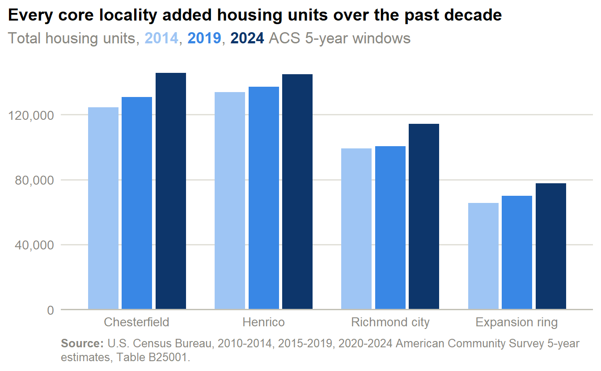
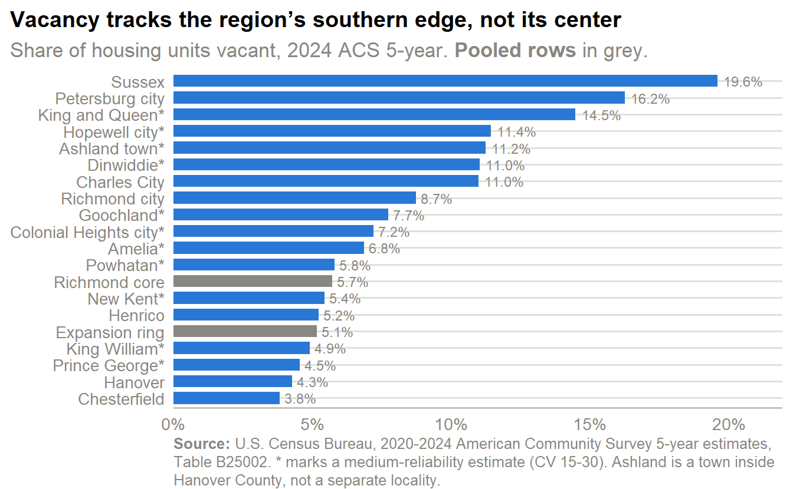
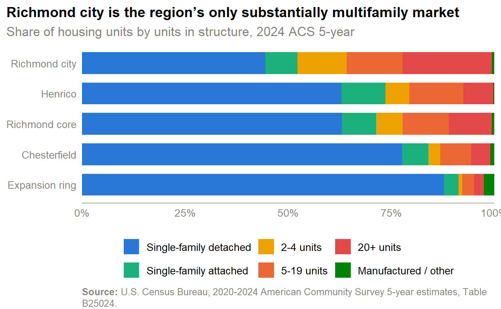
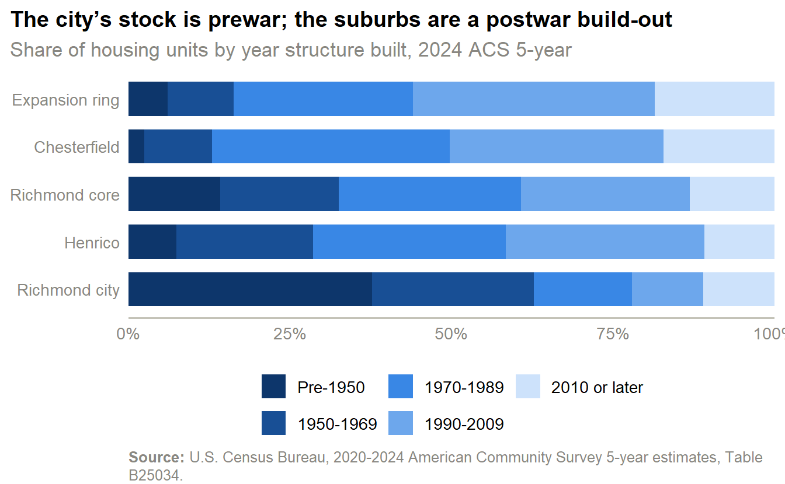
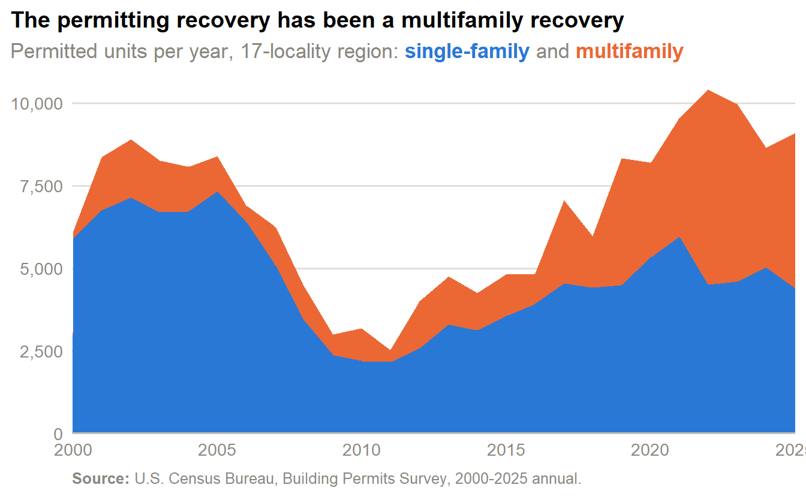
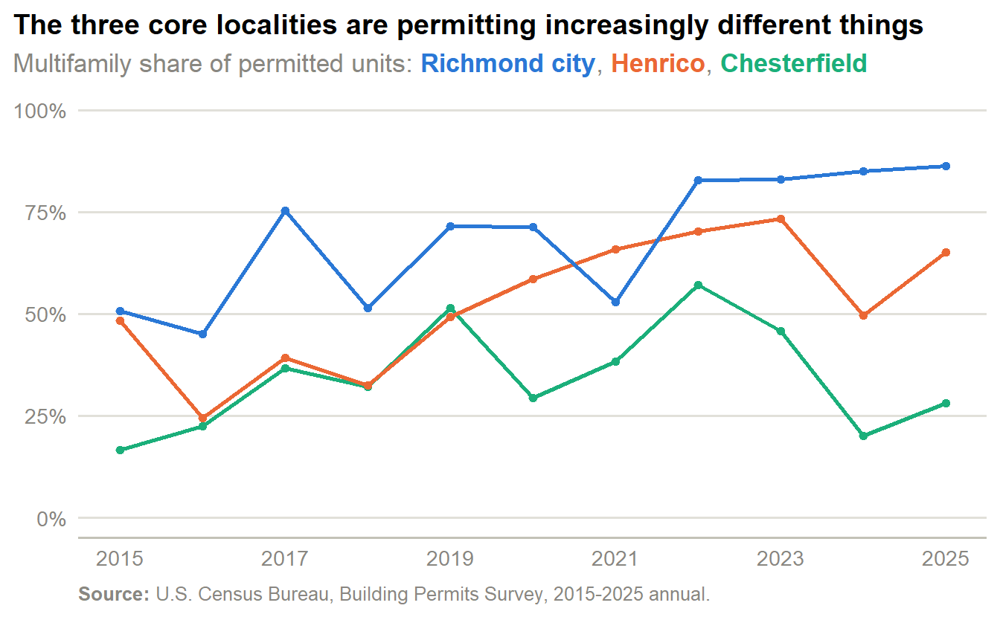

Inventory
Housing stock, occupancy and vacancy, structure type, year built, and building permits for the Richmond region. Stock figures come from the ACS 5-year estimates; production figures from the Census Building Permits Survey.
Two different things
Stock is what exists — the ACS count of housing units standing in a five-year window. Production is what was permitted — an administrative count of permits issued, which leads completions by a year or more and can be cancelled. The two never reconcile exactly, and neither is a count of units built. Read them as separate series.
The region added housing, but the expansion ring grew faster than the core
- The three core localities held 404,918 housing units in the 2024 window, up 13.3% from the 2014 window.
- The four-locality expansion ring grew 18.4% over the same decade — faster in percentage terms than the core, from a much smaller base.
- Chesterfield added the most units of any single locality, growing 17.1% while Henrico grew 8.3%.
- Richmond city grew 15.3%, second-fastest among the core three despite being the most built-out.
| Locality | 2014 | 2024 | Change | % change |
|---|---|---|---|---|
| Richmond core (3 localities) | 357,302 | 404,918 | 47,616 | 13.3% |
| Chesterfield County, Virginia | 124,384 | 145,709 | 21,325 | 17.1% |
| Henrico County, Virginia | 133,795 | 144,916 | 11,121 | 8.3% |
| Richmond city, Virginia | 99,123 | 114,293 | 15,170 | 15.3% |
| Expansion ring (4 localities) | 65,559 | 77,613 | 12,054 | 18.4% |
| Hanover County, Virginia | 39,026 | 44,589 | 5,563 | 14.3% |
| Petersburg city, Virginia | 16,475 | 18,075 | 1,600 | 9.7% |
| Prince George County, Virginia | 12,136 | 13,532 | 1,396 | 11.5% |
| Powhatan County, Virginia | 10,195 | 12,021 | 1,826 | 17.9% |
| Dinwiddie County, Virginia | 11,504 | 11,982 | 478 | 4.2% |
| Goochland County, Virginia | 8,726 | 11,208 | 2,482 | 28.4% |
| Hopewell city, Virginia | 10,185 | 10,448 | 263 | 2.6% |
| New Kent County, Virginia | 7,612 | 9,795 | 2,183 | 28.7% |
| Colonial Heights city, Virginia | 7,817 | 8,114 | 297 | 3.8% |
| King William County, Virginia | 6,597 | 7,730 | 1,133 | 17.2% |
| Amelia County, Virginia | 5,400 | 5,815 | 415 | 7.7% |
| Sussex County, Virginia | 4,201 | 4,706 | 505 | 12.0% |
| King and Queen County, Virginia | 3,440 | 3,511 | 71 | 2.1% |
| Charles City County, Virginia | 3,263 | 3,270 | 7 | 0.2% |
- Chesterfield (145,709) passed Henrico (144,916) to become the region’s largest locality by housing units.
- The pooled core holds roughly five times the expansion ring’s stock, so equal percentage growth in the ring is a much smaller absolute number of units.
- Outside the core and the ring, no single locality holds more than about 18,000 units — the region’s housing is heavily concentrated in the three core jurisdictions.
Vacancy is low in the suburbs and concentrated in the city and the southern localities

- Sussex County (19.6%) and Petersburg city (16.2%) have the region’s highest vacancy rates — both are southern localities with declining or flat housing demand.
- Chesterfield’s 3.8% is the region’s lowest, and Hanover (4.3%) is close behind; the suburban core runs tight.
- Richmond city sits at 8.7%, above the pooled core’s 5.7% but slightly below Virginia’s 8.7%.
- The pooled expansion ring (5.2%) and core (5.7%) are nearly identical, so the spread in this chart is driven almost entirely by the outer southern localities.
| Reason vacant | Chesterfield | Henrico | Richmond city | Richmond core |
|---|---|---|---|---|
| For rent | 1,830 | 2,924 | 3,911 | 8,665 |
| For sale only | 661* | 500* | 436* | 1,597 |
| For seasonal, recreational, or occasional use | — | 274* | 457* | 821* |
| Other vacant | 2,183 | 2,610 | 2,971 | 7,764 |
| Rented, not occupied | — | 546* | 992 | 1,926 |
| Sold, not occupied | 402* | 697* | 1,205* | 2,304 |
- “For rent” is the largest vacancy category in every core locality — 39.2% of Richmond city’s vacant units and 38.7% of Henrico’s.
- “Other vacant” is the second-largest everywhere, at 29.8% to 39.3% of vacant units; it is the Census catch-all for units that are neither on the market nor seasonal, and it includes long-term-abandoned stock.
- Units held off market (“other vacant” plus seasonal) account for roughly a third of core vacancy, so the effective available vacancy rate is well below the headline number.
- Chesterfield’s for-sale vacancies (661) outnumber Henrico’s (500) despite Chesterfield’s lower overall vacancy rate.
The core is a single-family region; density is concentrated in the city

- Single-family detached homes are 63.0% of the pooled core’s stock and 87.8% of the expansion ring’s.
- Richmond city is the outlier: 21.6% of its units sit in buildings of 20 or more, against 7.2% in Henrico and 4.6% in Chesterfield.
- Small multifamily (2–4 units) is scarce everywhere but the city, where it is 12.0% of stock versus 2.9% in Chesterfield and 0.9% in the expansion ring.
- Manufactured housing is a rounding error in the core (0.7%) but 2.5% of the expansion ring and 12.6% of Ashland’s stock.
Small-geography reliability
Ashland is a town of roughly 3,164 housing units, so its ACS estimates carry wide margins of error — 2 of its 11 structure-type and year-built cells fall below the CV-30 reliability threshold. Ashland and the four expansion-ring localities are shown here only where the underlying estimate is reliable; suppressed cells appear as an em dash.
Housing age splits the region in two

- 37.7% of Richmond city’s housing was built before 1950, against 7.4% in Henrico and 2.4% in Chesterfield.
- Chesterfield’s stock is the region’s newest: 50.3% was built in 1990 or later, and 17.2% since 2010.
- The expansion ring is newer still by that measure — 56.0% built since 1990 — consistent with its faster unit growth.
- Only 13.2% of the pooled core’s stock dates from 2010 or later, so the great majority of the region’s housing predates the current market.
Permitting recovered from the 2011 trough, and what gets permitted has changed

- Regional permitting peaked at 10,414 units in 2022 and bottomed at 2,520 in 2011 — a 76% collapse.
- The 2025 total of 9,091 units is still below the 2022 peak, but roughly 3.6 times the trough.
- Multifamily was 3.6% of permitted units in 2000 and 51.6% in 2025; it first exceeded single-family in 2022.
- Single-family permitting has been flat at roughly 4,400–5,900 units a year since 2020, so essentially all of the swing in regional volume is multifamily.
| Locality | Single-family | Multifamily | Total | MF share |
|---|---|---|---|---|
| Richmond region (17 localities) | 24,461 | 23,206 | 47,667 | 48.7% |
| Richmond core (3 localities) | 14,916 | 22,532 | 37,448 | 60.2% |
| Chesterfield County | 8,902 | 5,857 | 14,759 | 39.7% |
| Henrico County | 3,920 | 7,549 | 11,469 | 65.8% |
| Richmond (Independent City) | 2,094 | 9,126 | 11,220 | 81.3% |
| Expansion ring (4 localities) | 6,719 | 371 | 7,090 | 5.2% |
| Hanover County | 2,466 | 326 | 2,792 | 11.7% |
| New Kent County | 1,865 | 35 | 1,900 | 1.8% |
| Goochland County | 1,582 | 0 | 1,582 | 0.0% |
| Powhatan County | 806 | 10 | 816 | 1.2% |
| King William County | 802 | 9 | 811 | 1.1% |
| Prince George County | 521 | 16 | 537 | 3.0% |
| Petersburg (Independent City) | 217 | 271 | 488 | 55.5% |
| Dinwiddie County | 351 | 0 | 351 | 0.0% |
| Amelia County | 291 | 2 | 293 | 0.7% |
| Sussex County | 171 | 0 | 171 | 0.0% |
| King and Queen County | 168 | 0 | 168 | 0.0% |
| Hopewell (Independent City) | 122 | 5 | 127 | 3.9% |
| Charles City County | 120 | 0 | 120 | 0.0% |
| Colonial Heights (Independent | 63 | 0 | 63 | 0.0% |
- Over the last five years the core three localities accounted for 37,448 of the region’s 47,667 permitted units — 79% of regional production.
- Richmond city permitted 9,126 multifamily units in five years, more than Henrico (7,549) and Chesterfield (5,857), despite being the smallest of the three by stock.
- Chesterfield is the region’s single-family engine, with 8,902 single-family permits — more than double Henrico’s.
- The expansion ring permitted 6,719 single-family units against only 371 multifamily, a 5.2% multifamily share.

- Richmond city’s multifamily share rose from 50.7% in 2015 to 86.3% in 2025 — the city now permits almost nothing but apartments.
- Chesterfield peaked at 57.2% multifamily in 2022 and fell back to 28.2% by 2025, returning to a single-family pattern.
- Henrico is the most volatile of the three, swinging between 24.5% (2016) and 73.4% (2023).
- The three localities diverged after 2021: before then their multifamily shares moved roughly together, and since then they have not.
What this page establishes
The Richmond region’s existing stock is overwhelmingly single-family and largely predates 1990, with density and prewar housing both concentrated in Richmond city. New production tells a different story — since 2022 the region has permitted more multifamily than single-family units, driven almost entirely by the city and Henrico, while the expansion ring continues to build detached houses almost exclusively. Vacancy is low across the core and the ring, so the stock that exists is being used; the region’s slack sits in its southern localities. The Demographics and Market pages cover who lives in this housing and what it costs.